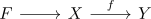

fiber sequence with homology-contractible fiber induces isomorphism
Proposition
Let

be fiber sequence.
Let $M\in \mathrm{Ab}$ be an abelian group Suppose $\tilde{H}_*(F,M) = 0$.
Then $H_*(f,M)$ is an isomorphism
see:
- homology
Let

be fiber sequence.
Let $M\in \mathrm{Ab}$ be an abelian group Suppose $\tilde{H}_*(F,M) = 0$.
Then $H_*(f,M)$ is an isomorphism
see: